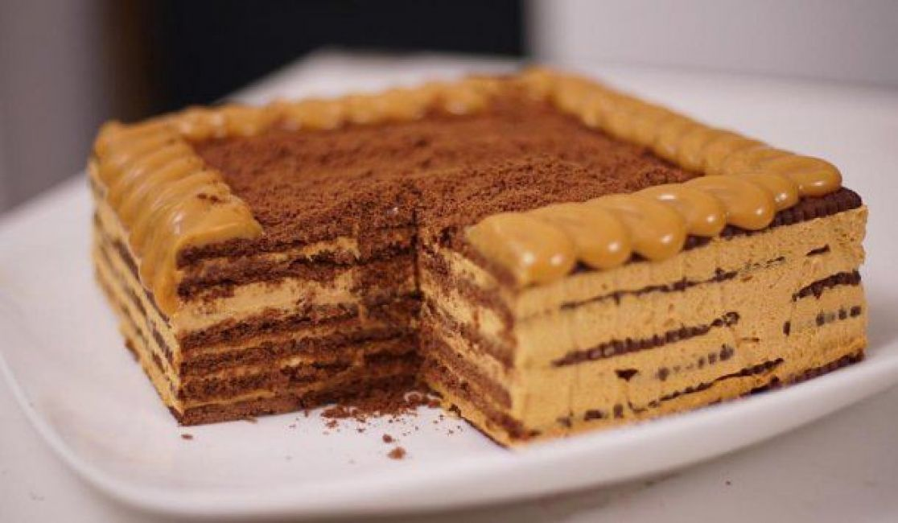

La chocotorta es un postre originario de Argentina. Con el lanzamiento en 1975 por Bagley de una variedad de galletitas de chocolate, marca Bagley, en muchas poblaciones del sur de Santa Fe se comenzó a elaborar en los hogares esta torta, conocida como el postre de las chocolinas.
En 1982, la publicitaria Marité Mabragaña, aficionada a la gastronomía y primera jefa creativa publicitaria empleada por la agencia De Luca introdujo la torta para celebrar un cumpleaños y gustó tanto que debió hacer dos más y llevarlas a sus clientes, dueños de las galletitas Chocolinas, producidas por la entonces empresa argentina Bagley, la dueña del queso crema Mendicrim de la cooperativa SanCor y el propietario de la empresa desaparecida productora de dulce de leche Ronda.
Aunque a las marcas les fascinó la idea de Marité, tardaron cerca de un año en hacer el comercial debido a dificultades en base a cobranding empresarial. A partir de que apareció el comercial, que estuvo al aire casi 2 años, las ventas de Chocolinas y Mendicrim aumentaron exponencialmente.
Luego de este éxito, a Marité se le ocurrió sumergir las galletitas chocolatadas en leche pasteurizada (contrario al postre tiramisú, que se sumerge en café), intercalándolas con las capas de dulce de leche y queso crema, de modo que la capa de galletitas chocolatadas bien embebidas quedaran en la base del postre y la capa superior tuviera el formato rectangular actual
Si quiere mas informacion ingrese en este link